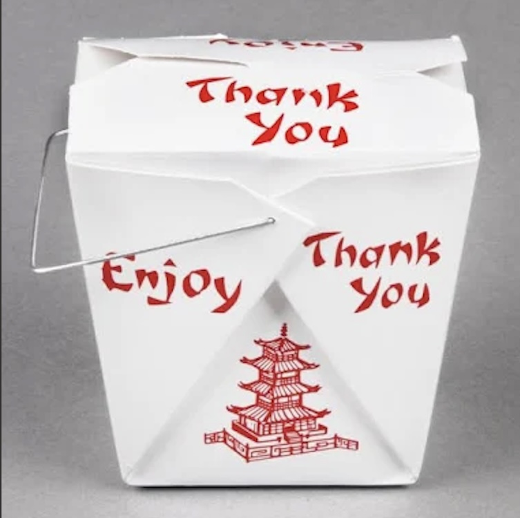

Weekly Reads

Practicing Dying — Charlotte Northall

Finding the Raga — Amit Chaudhuri

A Different Kind of Tension — Jonathan Lethem

Autobiography of a Yogi — Paramahansa Yogananda

Creation Lake — Rachel Kushner
Selective bookstore launching March 1st — handpicked titles, direct from the shores.
Send a Postcard
Let pen and ink be your guide.
Send a postcard — I will always write you back (postcards only)
1968 S. Coastal Hwy #4182
Laguna Beach, CA 92651

Postmark your thoughts

Waves Back – Write & Receive a Fortune Cookie
Share a thought, feeling, or question. The waves will return a fortune cookie message just for you.
Original Sounds
Recorded in the moment, shared freely.

Waves of Insight: 3-Card Tarot
Draw three cards for Past, Present, Future. Let the waves reveal guidance.
Support Local Radio
Independent voices need your support — keep the airwaves alive.